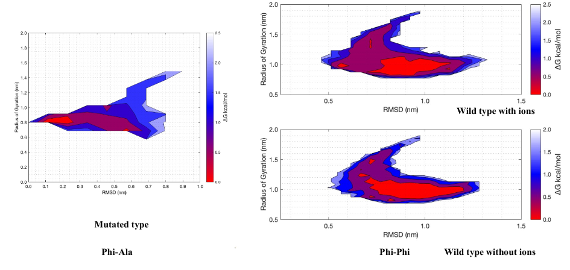

Undergraduate Research
I am currently an undergraduate research assistant in Dr. Jeffery B. Klauda's Laboratory of Molecular and Thermodynamic Modeling, where I have worked at since 2021. I have been involved in two projects, both of which used molecular dynamics techniques to run simulations of membrane-associated proteins and perform analyses on them. I have used SFTP software to connect to two local supercomputer clusters, Zaratan (formerly known as Deepthought2) at the University of Maryland and Rockfish at Johns Hopkins University. I got experience using PuTTY to make SSH connections to these clusters, run my molecular simulations, and perform analyses by interacting with the terminal. Some software I used to perform other analyses included VMD, MATLAB, Ubuntu, Pymol, and Excel.
My first project was concerned with modeling a Toll-Like Receptor (TLR) protein-ligand complex, specifically the binding of various polysaccharides to a TLR10 dimer. TLR proteins are found on the surface of sentinel cell membranes, and search for foreign substances. While crystal structures of this protein exist, there had never been a study on the effect of fungal or bacterial polysaccharides on its binding pocket. Between 2021-2023 I worked with a PhD student and fellow undergraduate student on investigating the conformational changes of the protein that resulted from the binding of different polysaccharides. Although we drafted a paper, the project unfortunately fell through during peer review after it was discovered that the initial force field and some parameters for the molecular dynamics simulations were off, rendering the results invalid. Nevertheless, I gained valuable experiences working with the Zaratan HPC cluster and performing analyses on my simulation data such as interaction energy per residue, root-mean-square deviation (RMSD) between the original crystal structure and the simulations, principal components analysis (PCA), and heat map generation. I also learned how to use the VMD and PyMOL software to visualize my systems and view them over time.
My second and current project involves modeling a magainin (MAG) antimicrobrial peptide, which is found in the African clawed frog (Xenopus laevis). The goal is to understand how MAG might bind to the outer layer membrane of the skin (stratum corneum), and if it has a higher preferences for the stratum corneum or bacterial membranes, which might reduce the ability of MAG to kill bacteria on the skin. I modeled a wild-type MAG peptide, and a rotation student modeled the same peptide but with a point mutation intended to destabalize phenylalanine pi-pi interactions. Through this project I became familiar with using virtual environments in Linux (Ubuntu) and MATLAB for selecting and plotting data with various color schemes and resolutions. The project began in 2023 and is still ongoing, but a preliminary comparsion for the radius of gyration is seen below.
